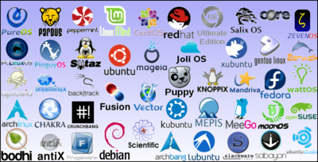
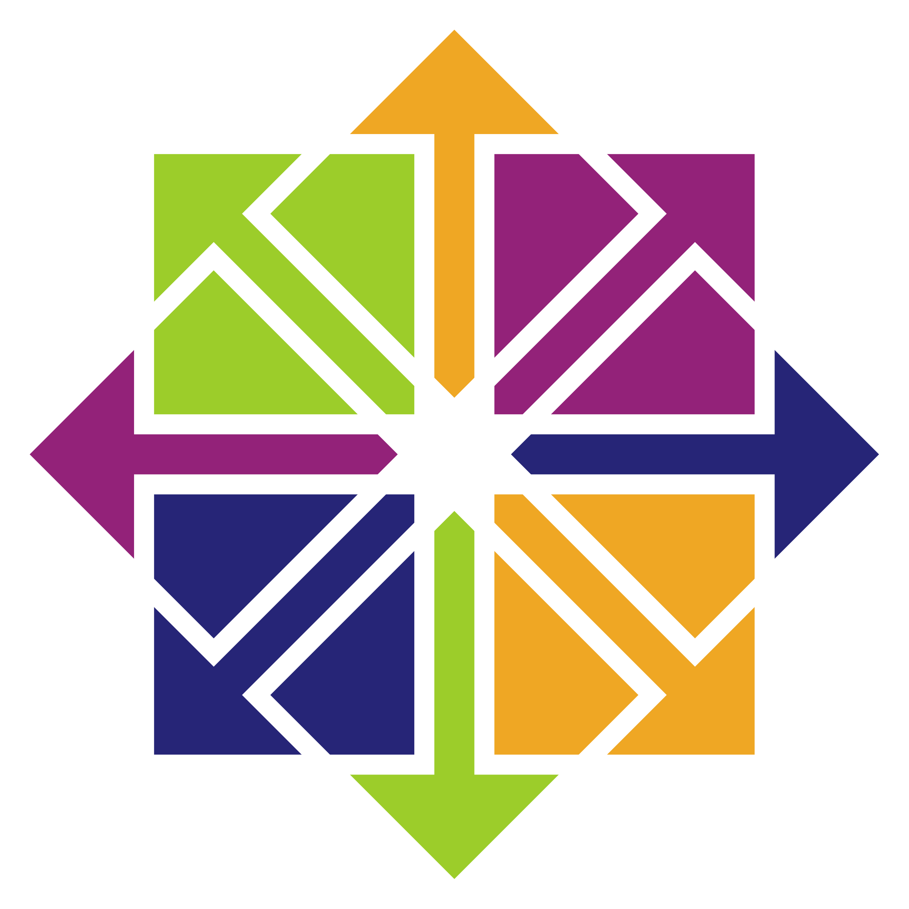

17 Macam Distro Linux Beserta Pengertiannya

Apakah yang kalian ketahui tentang distro linux ? distro linux merupakan sebutan untuk versi linux yang beredar luas di masyarakat distro linux yang beredar di masyarakat ini tentunya memiliki berbagai fungsi dan kegunaan yang berbeda-beda. Berikut pengertian dan macam macam Distro linux yang banyak digunakan oleh masyarakat antara lain :

Debian
Debian merupakan hasil kinerja para sukarelawan untuk membuat distro linux dengan kualitas tinggi dan non komersial. Upgrade debian sendiri mudah dilakuankarena paket yang didefinisikan dengan baik dikembangkan secara terbuka. Debian merupakan satu-satunya distro linux yang dikembangkan secara bersam-sama melalui internet dengan lebih dari 400 sampai 1500 pengelola paket.

Ubuntu
Ubuntu merupakan distro linux yang berbasis debian proyek. Ubuntu ini disponsori oleh Canonical LTD. Nama ubuntu sendiri diambil dari nama sebuah konsep edeologi afrika selatan. Ubuntu berasal dari bahasa kuno afrika yang berarti rasa peri kemanusiaan terhadap sesama manusia. Ubuntu hadir dengan beberapa kelebihan yaitu pengaturan network yang lebih mudah, dapat membuat start up disk dengan USB(USB booting), dan unmount media lebih mudah atau biasanya kita kenal dengan eject.

Redhat
Redhat merupakan salah satu GNU linux yang tergolong versi lama yang masih menawarkan kemudahan dan mode tampilan sepenuhnya berbasis grafis administrasi, dekstop KDE 3.1, GNOME 22, dan aplikasi miltimedia player lainnya. Penggunaan redhat hampir sama dengan sistem operasi windows yang terdapat kemudahan dalam penggunaanya antara lain : dalam melakukan instalasi software, pengenalan deteksi hardware, pengelolaan sistem dan harddisk serta penggunaan aplikasi-aplikasi yang semua dapat dilakukan dengan mudah dan didukung dengan menu grafis serta perintah yang mudah untuk diikuti.
Mandrake atau Mandriva
Mandriva ini dibuat berdasarkan distro redhat disertai dengan banyak pengembangan aplikasi dan perkonfigurasian yang mudah untuk para pemula pada saat proses awal instal dengan penggunaan berbasis x windows, didukung dengan berbagai bahasa yang memberi kemudahan dalam penggunaannya. Mandriva ini telah dikompilasi denga optimasi CPU untuk kelas pentium III keatas (intel,AMD,Cyrixm wingrup) dan processor versi yang lebih tinggi serta menghasilkan ooptimasi lebih dari 30%. Mandriva ini menggunakan paket manager yang disebut Urepmi. Penamaan mandrake sendiri digunakan pada versi 8.0,sedangkan penamaan mandriva digunakan pada versi 8.2 sampai 9.2
Suse
Suse merupakan distro linux yang stabil, mudah ketika melakukan deteksi hardware, mudah dikelola, dan didukung penuh oleh komunitas pengembang diseluruh dunia. Keunggulan Sude dibandingkan distro linux lainnya adalah kelengkapan pustaka dan banyaknya software yang di sertakan didalamnya. Perangkat administrasi Suse mendukung kartu grafis baru yang dapat melakukan demo secara langsung paket tersebut dinamakan SPN (Suse Package Manager)
Xandros
Xandros merupakan distro linux yang dibuat berdasarkan KDE. Tampilan Xandros sangat mirip dengan microsoft windows apabila dioperasikan akan terasa mudah dan nyaman . xandros dikenal user friendly dan tidak menyulitkan bagi para pemula. Menurut pengetahuan saya Xandros sudah memiliki lebih dari 4 versi.

Cent OS (Community Enterprise Operating System)
Cent OS merupakan sistem operasi yang berbasis redhat enterprise linux (RHEL). Salah satu kekurangan cent OS adalah kurangnya dukungan kernel untuk sistem file sehingga tidak bisa membaca reiser FS dan NTFS.

Gentoo
Gentoo merupakan sistro linux yang menggunakan paket sistem management pertage yang dirancang agar mudah melakukan penambahan(modulator), dapat diintegrasikan dengan distro lain, nudah diatur, fleksibel dan di ooptimalkan untuk masing-masing komputer pengguna. Nama proyek pengembangan dan produknya diambil dari jenis pinguin yang bernama Gentoo. Gentoo mempunyai keunikan tersendiri yaitu dapat dilakukan optimasi dalam kegunaanya, konfigurasinya sangat ekstrem, dukungan dari sesama pengguna dan pengembang yang baik merupakan kelebihan gentoo, berkat adanya teknologi bernama portage gentoo dapat menjadi server yang aman dan solusi untuk mengatasi embeded.
Knoppix
Knoppix merupakan distro linux live cdtinya dapat dijalankan melalui cd-rom tanpa instalasi pada harddisk. Penamaan Knoppix sendiri diambil dari nama pembuatnya yaitu klaus knopper. knoppix memiliki ragam aplikasi yang cukup lengkap, dapat digunakan sebagai demo atau sesama belajar linux, kapasitas harddisk yang besar untuk menggunakan modus grafisnya sebesar 96mb. Itu tadi merupakan kelebihan dari knoppix.
Turbo Linux
Turbo Linux merupakan distro linux dengan kinerja tinggi yang dialokasikan untuk pasar workstation dan server terutama untuk penggunaan cusstering dan orientasinya ke perusahaan. Turbo linux workstation merupakan versi dekstopnya sedangkan turbo linux merupakan server yang digunakan untu back and server dengan kinerja tinggi terutama untuk penggunaan bisnis pada perusahaan, E-commerce, dan transaksi B2B(Busisnes to Busines). Turbo cluser server digunakan untuk membuat server cluster dengan skala luas . 25 cluster node atau lebih merupakan salah satu aplikasi yang berbasis konsep sederhana dan kuat dinamakan para metric execotion.

Fedora
Fedora merupakan distro linux yang berbasis RPM dan dikembangkan oleh Fedora Project yang didukung oleh komunitas pemograman serta disponsori oleh redhat. Fedora mempunyai fitur dekstop GNOME 2.24.1.KDE 412, open office 3.0, firefox 3.04, linux 26 27 5 x org-x server 1.5.3, Glibc 2.9, security system, audit dan instrusion, detection sectool, package kit framework connection sharing yang melengkapi network manager. Sehingga fedora menjadi salah satu distro dengan fitur terbaru yang akan diikuti distro-distro lainnya.
Free BSD
Free BSD secara teknis bukan merupakan sistem operasi linux karena merupakan turunan linux yang dikembangkan oelh universityof california barkeley dengan menggunakan sistem berbasis 4.4 BSD lite 2. Bagian penting dalam Free BSD ini adalah koleksi ports yang saat ini memiliki 8.633 ports. Aplikasi unix populer digunakan untuk membarikan otomatis proses porting. Free BSD memiliki source dan mendukung penuh teknologi jaringan TCP/IP.

Zencase
Zencase merupakan bagian dari distro zenwalk, dikembangkan di indonesia dan dibuat khusus untuk kebutuhan warung internet (Warnet) didalamnya telah terdapat aplikasi auto recovery dan billing system. Zencase menjadi populer karena sering digunakan pada warnet-warnet dan zencase ini dibuat sedemikian rupa agar mudah digunakan bagi para pemula tanpa pengetahuan teknis.
Trustix Merdeka
Trustix Merdeka merupakan distro linux yang digunakan untuk komputer dekstop dengan mengambil basis trustix securse linux dengan penekanan pada security paket aplikasi yang disertakan didalamnya.Trustix Merdeka merupakan paket pilihan dengan auditing yang cukup ketat untuk setiap sumber yang disertakan. Distro buatan indonesia ini bertujuan bukan sekedar distro linux saja, tetapi ditargetkan menjadi jalur komunikasi masyarakat dunia. Bahasa indonesia dan bahasa inggris yang digunakan dapat dikatakan sebagai faktor pemersatu setiap programer di indonesia. Program-program yang dibuatnya pun didistribusikan secara massal bersamaan dengan Trustix Merdeka.
Blankon
Blakon merupakan distro yang dikembangkan oleh yayasan penggerak linuk indonesia dan komunitas ubuntu indonesia untuk menghasilkan distro linux yang sesuai dengankebutuhan pengguna komputer umumnya di indonesia dengan menghadirkan filosofi kemudahan dan kehandalan yang ditawarkan ubuntu sebagai distro sumber. Blankon dikembangkan secara terbuka dan bersama-sama untuk menghasilkan distro khas indonesia khususnya untuk dunia pendidikan, perkantoran, dan pemerintah.

Lubuntu
Lubuntu merupakan salah satu distro linux live cd artinya kita tidak memerlukan penginstallan sistem operasi langsung pada harddisk. Lubuntu ini merupakan solusi jitu jika suatu komputer di sekolah atau dirumah harddisknya sedang rusak atau bad sector maka dari itu Lubuntu pilihan yang tepat karena penggunaanya yang mudah simpel dan beberbasis GUI. Lubuntu ini baru-baru muncul di akhir-akhir tahun ini.
Kali Linux
Kali Linux merupakan distro linux open source yang sering digunakan oleh para hacker untuk melakukan pembobolan suatu system karena system atau aplikasi yang terdapat didalam kali linux ini mendukung untuk ulah nakal para hacker. Pengalaman saya sendiri juga sukses membobol akses suatu wifi dengan menggunakan sistem operasi ini.